승강기기사 (2003-03-16 기출문제)
1과목: 승강기 개론
1. 승객용 엘리베이터의 권상기에 사용되는 브레이크는 감속도가 몇 g 이하로 제동되어야 하는가? (단, g 는 중력가속도이다.)(오류 신고가 접수된 문제입니다. 반드시 정답과 해설을 확인하시기 바랍니다.)
- 0.1
- 0.91
- 1.0
- 2.5
(정답률: 29%)

2. 직류전동기의 속도제어방법이 아닌 것은?
- 계자제어법
- 극수변환법
- 저항제어법
- 전압제어법
(정답률: 55%)
3. 카의 승강속도가 조속기 풀리에 의하여 회전운동으로 변경되어 이 풀리에 취부되어 있는 진자가 스프링과 서로 균형을 이루어 속도에 알맞은 움직임을 하는 조속기는?
- 플라이볼형 조속기
- 디스크형 조속기
- 스프링형 조속기
- 롤세이프티형 조속기
(정답률: 31%)
4. 도어 로크가 확실히 걸린 후 도어스위치가 들어가게 하거나 또는 도어 스위치가 끊어진 후에 도어 로크가 열리도록 하는 것은?
- 도어 클로저(Door closer)
- 도어 머신(Door machine)
- 도어 시스템(Door system)
- 도어 인터록( Door interlock)
(정답률: 53%)
5. 로핑방식에 있어서 2:1 로핑을 1:1 로핑과 비교할 때 옳지 않은 것은?
- 로프의 길이가 현저하게 길어진다.
- 승강기의 속도는 1:1 로핑에 비해 1/2로 줄어든다.
- 1:1 로핑에 비해 전체 효율이 낮아진다.
- 로프의 장력이 1:1 로핑에 비하여 1/2이 되므로 로프의 수명이 길어진다.
(정답률: 47%)
6. 안전계수가 12인 로프의 허용하중이 500kg이라면 이 로프가 최대로 지탱할 수 있는 하중은 몇 kg 인가?
- 3000
- 4000
- 5000
- 6000
(정답률: 64%)
7. 트랙션 권상기에 대한 설명 중 옳지 않은 것은?
- 헬리컬기어드 권상기는 웜기어에 비해 효율이 높다.
- 주로프에 사용되는 도르래의 피치지름은 로프지름의 40배이상으로 한다.
- 도르래 재질을 주철로 사용하는 경우, 안전률은 4이상으로 한다.
- 중.저속용 엘리베이터의 권상기는 주로 웜기어를 사용한다.
(정답률: 56%)
8. 승강기 제어반의 절연저항에 관한 설명 중 틀린 것은?
- 누전에 의한 감전재해나 전기화재와 같은 사고를 방지하기 위하여 측정한다.
- 제어회로전압 150V이하는 0.02MΩ이상이어야 한다.
- 저압회로의 누설전류 상한은 1mA로 정하고 있다.
- 신호회로전압 150V이하는 0.1MΩ이상이어야 한다.
(정답률: 49%)
9. 피트에 관한 설명으로 옳은 것은?(오류 신고가 접수된 문제입니다. 반드시 정답과 해설을 확인하시기 바랍니다.)
- 피트깊이가 1.5m미만인 경우에도 사다리를 설치한다.
- 피트깊이가 3m를 초과하면 출입구를 반드시 설치하여야 한다.
- 출입구 개폐에 관계없이 엘리베이터는 움직여야 한다.
- 사다리는 수직사다리로 설치하여야 한다.
(정답률: 27%)
10. 엘리베이터의 구출운전에 대한 설명 중 옳은 것은?
- 엘리베이터가 층과 층사이에 정지한 경우 엘리베이터의 구출운전스위치를 누르면 정지된 엘리베이터는 서서히 움직여 가장 가까운 층에서 정지하여 승객이 내릴 수 있게 한다.
- 구출운전은 2대이상 나란히 설치되어 있는 엘리베이터 하나가 급행구간에서 정지한 경우에 이용된다.
- 구출운전은 상부 구출운전과 측면 구출운전이 있다.
- 구출운전은 속도가 60m/min이하의 엘리베이터에만 가능하다.
(정답률: 28%)
11. 권동식 권상기에 비하여 트랙션 권상기의 장점이라고 볼 수 없는 것은?
- 기계실의 소요 면적이 작다.
- 소요 동력이 작다.
- 승강 행정에 제한이 없다.
- 권과(지나치게 감기는 현상)를 일으키지 않는다.
(정답률: 44%)
12. 어떤 이상원인으로 카가 감속되지 못하고 최종단층을 지나칠 경우 이를 검출하여 강제적으로 감속 및 정지시키는 안전장치는?(오류 신고가 접수된 문제입니다. 반드시 정답과 해설을 확인하시기 바랍니다.)
- 터미널 리미트 스위치(Terminal Limit Switch)
- 파이널 리미트 스위치(Final Limit Switch)
- 슬로우 다운 스위치(Slow Down Switch)
- 랜딩 스위치(Landing Switch)
(정답률: 23%)
13. 교류귀환제어에 대한 설명이다. ( )안에 알맞은 것은?
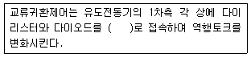
- 직렬
- 병렬
- 역병렬
- 역직렬
(정답률: 55%)
14. 에스컬레이터 1200형의 공칭 수송능력은 시간당 몇 명인가?
- 6000
- 7000
- 8000
- 9000
(정답률: 47%)
15. 속도가 90m/min인 엘리베이터의 경우, 상부여유거리와 피트깊이는 각각 몇 m 이상이어야 하는가?(오류 신고가 접수된 문제입니다. 반드시 정답과 해설을 확인하시기 바랍니다.)
- 상부여유거리 1.2m이상, 피트깊이 1.2m이상
- 상부여유거리 1.3m이상, 피트깊이 1.4m이상
- 상부여유거리 1.4m이상, 피트깊이 1.6m이상
- 상부여유거리 1.6m이상, 피트깊이 1.8m이상
(정답률: 45%)
16. 직접식 유압엘리베이터의 실린더의 길이는?
- 승강로 행정길이와 동일하게 한다.
- 승강로 행정길이의 1/2이 되게 한다.
- 승강로 행정길이의 1/4이 되게 한다.
- 승강로 행정길이의 2배가 되도록 한다.
(정답률: 43%)
17. 초고층 빌딩에서 중간의 승계층까지 직행 왕복운전하여 대량 수송을 목적으로 하는 엘리베이터는?
- 전망용 엘리베이터
- 더블데크 엘리베이터
- 셔틀 엘리베이터
- 경사 엘리베이터
(정답률: 50%)
18. 기계실의 소요 환기풍량을 산출하기 위하여 발생 열량을 산출하려고 한다. 발생열량 산출에 관계가 없는 것은?
- 기계실의 크기
- 적재하중
- 제어방식
- 속도
(정답률: 36%)
19. 유압식 승강기에 가장 많이 사용되고 있는 펌프는?(오류 신고가 접수된 문제입니다. 반드시 정답과 해설을 확인하시기 바랍니다.)
- 외접 기어 펌프
- 베인 펌프
- 슬라이딩 펌프
- 스크류 펌프
(정답률: 14%)
20. 주차용 운반기가 피트내로 추락할 경우에 대비하기 위한 피트바닥에서 운반기 하부 밑까지의 거리는 몇 cm 이상이어야 하는가?
- 30
- 40
- 50
- 60
(정답률: 35%)
2과목: 승강기 설계
21. 엘리베이터용 전동기에 대한 설명으로 옳은 것은?
- 기동전류가 커야 한다.
- 회전부의 관성 모멘트가 커야 한다.
- 전부하 가속 상승할 때 부하가 가장 작다.
- 시간정격을 적절히 설계하면 정격출력이 작은 전동기를 사용할 수 있다.
(정답률: 42%)
22. 와이어로프와 권상도르래의 마찰력을 이용한 트랙션식 권상기에서 도르래의 홈 형상에 따른 권상능력을 비교하였을 때 옳은 것은?
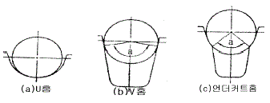
- U홈＜ 언더커트홈＜ V홈
- 언더커트홈 ＜ U홈 ＜ V홈
- V홈＜ U홈 ＜ 언더커트홈
- U홈 ＜ V홈 ＜ 언더커트홈
(정답률: 54%)
23. 카 자중이 1500kg이고 정격적재하중이 1150kg, 엘리베이터의 오버밸런스율이 50%일 때, 균형추의 중량은 몇 kg으로 하여야 하는가?
- 1975
- 2025
- 2075
- 3000
(정답률: 52%)
24. 승강기의 조명설비에 대한 설명으로 옳지 않은 것은?(관련 규정 개정전 문제로 여기서는 기존 정답인 2번을 누르면 정답 처리됩니다. 자세한 내용은 해설을 참고하세요.)
- 기계실의 조도는 기기가 배치된 바닥면에서 100룩스이상이어야 한다.
- 기계실의 조명 개폐기는 출입구가 멀고 손이 쉽게 닿지 않는 곳에 설치하여야 한다.
- 케이지 내의 조명전원은 동력전원과 분리하는게 좋다.
- 정전시에 작동되는 케이지 내의 예비조명장치의 밝기는 정해진 조건에서 1룩스이상이어야 한다.
(정답률: 53%)
25. 유입완충기를 설계할 때 행정은 정격속도의 115%에서 충돌할 경우 평균감속도는 얼마로 정지하기 위해 필요한 값으로 하는가? (단, g는 중력가속도이다.)
- 1g
- 2g
- 3g
- 4g
(정답률: 60%)
26. 로프식 엘리베이터의 각 회로의 용도 및 사용전압에 맞는 절연저항은?
- 신호회로의 사용전압이 110V인 경우 0.2MΩ이상
- 조명회로의 사용전압이 220V인 경우 0.4MΩ이상
- 전동기 주회로의 사용전압이 220V인 경우 0.2MΩ이상
- 전동기 주회로의 사용전압이 380V인 경우 0.2MΩ이상
(정답률: 47%)
27. 승강기의 설치위치 선정에 있어서 고려해야 할 사항으로 바람직하지 못한 것은?
- 엘리베이터와 에스컬레이터는 접근하기 쉽게 건물 중앙에 위치하여야 한다.
- 가장 번잡한 출입구가 건물 중간보다는 한쪽 끝에 치우쳐 있을 경우 엘리베이터를 중앙에 배치하는 것보다 끝에 배치하는 것이 바람직 할 수 있다.
- 일반적으로 승객이 엘리베이터에서부터 가장 먼 사무실로 걸어가는 거리는 일정 거리를 초과하지 않아야 한다.
- 승강기 위치를 선정할 때에 주차장이나 지하도 입구 등은 고려 대상에서 제외한다.
(정답률: 42%)
28. 카틀의 다음 요소에 작용하는 주요한 하중의 종류가 바르게 짝지어져 있지 않은 것은?
- 상부체대 - 장력
- 하부체대 - 굽힘력
- 충돌판 - 굽힘력
- 카주 - 굽힘력, 장력
(정답률: 50%)
29. 설계용 수평진도 0.6, 상하 가이드슈의 하중비 0.6, 카자중 1500kg, 저감율 0.25, 정격하중 1000kg일 때, 가이드레일에 걸리는 지진하중은 몇 kg 인가?
- 540
- 360
- 630
- 450
(정답률: 14%)
30. 엘리베이터가 운행 중에 지진 감지기가 동작하였다. 다음 설명 중 맞지 않는 것은?
- 기준층으로 신속히 복귀한다.
- 급행구간이 없는 일반 엘리베이터는 특저 및 저의 2단 설정으로 한다.
- 급행구간이 있는 일반 엘리베이터는 특저, 저 및 고의 3단 설정으로 한다.
- 급행구간이 있는 일반 엘리베이터라도 대략 10초 이내에 가장 가까운 층에 정지한다.
(정답률: 46%)
31. 길이 ℓ , 단면적 A인 균일 단면 봉이 인장하중 W 를 받아 λ 만큼 늘어났을 때 상관관계를 바르게 나타낸 것은? (단, E는 세로 탄성계수이다.)
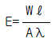
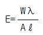
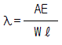
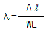
(정답률: 58%)
32. 승강로의 구조로 적합하지 않은 것은?
- 승강로의 벽 및 개구부는 방화상 지장이 없는 구조일 것
- 승강로 상단은 콘크리트 또는 철구조물로 제작될 것
- 승강로 내부에는 제연덕트를 설치할 것
- 승장도어 내부에는 눈에 잘 띄는 위치에 적당한 크기의 승강로 층수가 표시될 것
(정답률: 59%)
33. 로프식승강기의 기계실 크기는 어떻게 설정해야 하는가?
- 승강로의 수평투영면적과 같게 한다.
- 승강로의 수평투영면적의 2배이상으로 한다.
- 승강로의 수평투영면적의 3배이상으로 한다.
- 카의 바닥면적의 2배이상으로 한다.
(정답률: 58%)
34. 엘리베이터의 도어에 대한 설명으로 옳은 것은?
- 공동주택용 엘리베이터에서는 카가 주행중에 저속의 도어를 손으로 억지로 여는데 필요한 힘은 5kg이상 30kg이하이다.
- 공동주택용 엘리베이터에서는 카가 정지하고, 동력이 차단되었을 때 카가 저속시 도어를 손으로 억지로 여는데 필요한 힘은 20kg이상이다.
- 도어가 닫힐 때 도어에 끼어서 받는 아픔을 적게 하기 위한 도어의 개폐력은 5kg이하이다.
- 도어 가이드 슈가 끼워져 있는 문턱 홈에 구멍을 뚫어 먼지가 쌓이지 않게 한다.
(정답률: 36%)
35. 엘리베이터 권상기의 감속기구로서 웜 및 웜기어를 채용하려고 한다. 웜의 회전수가 1800rpm이고, 웜기어와 맞물리는 이의 수가 5일 때, 웜기어를 360rpm으로 회전시키려면 웜기어의 잇수를 얼마로 해야 하는가?
- 10
- 25
- 50
- 100
(정답률: 55%)
36. 엘리베이터의 시방을 결정할 때 가장 기본이 되는 것은?
- 정격용량과 정격속도
- 정격용량과 설치대수
- 정격속도와 설치대수
- 정격용량과 건물용도
(정답률: 46%)
37. 변압기 용량을 산정할 때, 전부하 상승전류에 대해서는 부등율을 얼마로 계산하여야 하는가?
- 0.85
- 0.9
- 0.95
- 1
(정답률: 48%)
38. 엘리베이터를 신호방식에 따라 분류할 때, 먼저 눌려져있는 버튼의 호출에 응답하고, 그 운전이 완료될 때까지 다른 호출을 일체 받지 않는 방식은?
- 단식 자동식
- 내리는 승합 전자동식
- 승합 전자동식
- 군관리방식
(정답률: 54%)
39. 유입식완충기의 최소충격행정(STROKE)은 카 정격속도의 115%에서 적용범위의 중량을 충돌시킨 경우로 설정한다. 정격속도가 120m/min일 경우 필요한 최소충격행정은 몇 mm 인가?
- 152
- 207
- 270
- 422
(정답률: 37%)
40. 승객용 엘리베이터의 카주에 대한 안전률은 얼마 이상으로 설계해야 하는가?
- 4
- 6
- 7.5
- 10
(정답률: 47%)
3과목: 일반기계공학
41. 4각 나사와 비교한 3각 나사의 일반적인 특징으로 틀린것은?
- 이송효율이 나쁘다.
- 체결용으로 적합하다.
- 마찰계수가 작다.
- 자립(self lock)작용이 있다.
(정답률: 40%)
42. 고탄성이 요구되는 판, 선 등의 가공재료로 쓰이며, 내식성, 내마모성이 필요한 펌프 부품, 선박용 부품에 쓰이는 구리합금은?
- 인청동
- 연청동
- 알미늄청동
- 규소청동
(정답률: 45%)
43. 다음 성분 중 고온에서 강을 여리게 하는 것으로 가장 대표적인 것은?
- Mn
- Si
- P
- S
(정답률: 49%)
44. 지름이 40mm인 연강제 실축에 200rpm으로 10PS를 전달할 때 생기는 전단응력은 약 몇 ㎏f/㎝2 인가?
- 90
- 142
- 180
- 285
(정답률: 31%)
45. 단면적 1㎝2, 길이 4m 인 강선(鋼線)에 2톤의 인장하중을 작용시키면 신장(cm)은? (단, 연강(軟鋼)의 E = 2 x 106 ㎏f/㎝2 이다.)
- 4
- 6
- 0.6
- 0.4
(정답률: 40%)
46. 뚫려있는 구멍을 넓혀서 정확한 치수로 다듬질 절삭하는 작업을 의미하는 용어로 가장 적합한 것은?
- 태핑
- 밀링
- 드릴링
- 보링
(정답률: 47%)
47. 기어 이의 줄이 축에 평행하고 평행한 두 축 사이에 회전운동을 전달하는 기어는?
- 웜 기어
- 크라운 기어
- 스퍼 기어
- 베벨 기어
(정답률: 42%)
48. 한숨을 쉬는 것과 같은 현상으로 소음과 진동을 내는 펌프의 운전 중에 발생하는 현상은?
- 서징현상
- 공동현상
- 수격현상
- 침식현상
(정답률: 59%)
49. 길이가 2 m 인 원형인 단순지지보의 지름이 25 ㎜ 일 때 보 중앙에 집중하중 400 ㎏f 이 작용하면 최대 굽힘응력은 몇 ㎏f/㎜2 인가?
- 65.22
- 100.38
- 117.22
- 130.38
(정답률: 25%)
50. 사인바를 이용하여 각도를 측정할 때 각도가 몇 도를 넘으면 오차가 많아지는가?
- 20°
- 25°
- 35°
- 45°
(정답률: 48%)
51. 비틀림 각이 30° 인 헬리컬 기어에서 잇수가 50, 치직각모듈이 4일 때 바깥지름은 약 몇 mm 인가?
- 204
- 239
- 208
- 243
(정답률: 42%)
52. 고무나 기름을 사용하여 화병과 같이 입구보다 중앙부분이 굵은 원통용기를 만드는 드로잉 가공법인 것은?
- 압출
- 벌징
- 인발
- 마폼
(정답률: 54%)
53. 다음 중 선반의 단동척(independent chuck)의 특징으로 맞은 것은?
- 원, 사각, 팔각 조임식에 용이하다.
- 원, 3각, 6각봉 가공에 사용한다.
- 전류자기를 이용한 자화면이다.
- 운전 중에도 작업이 가능하다.
(정답률: 51%)
54. 굽힘모멘트 1.5 × 106 ㎏f-㎜와 비틀림모멘트 2 × 106 ㎏f-㎜ 를 동시에 받는 축의 지름으로 다음 중 가장 적합한 것은? (단, 축 재료 허용 굽힘응력은 6㎏f/㎜2 이다)
- 150
- 200
- 225
- 250
(정답률: 22%)
55. 다음 중 베어링 메탈로서 가장 많이 사용되는 것은?
- 침탄강
- 화이트 메탈
- Ni - Cr강
- 구상흑연 주철
(정답률: 53%)
56. 보통주철과 고급주철에서 보통주철에 대한 설명으로 틀린 것은?
- 보통주철의 탄소 함유량은 3.2 ~ 3.8% 정도이다.
- 보통주철은 인장강도 25kgf/mm2 이상인 회주철이다.
- 주철은 강에 비하여 인장강도는 약하나 압축강도가 크다.
- 기계 구조물의 몸체 등에 많이 사용된다.
(정답률: 39%)
57. 볼 베어링 번호 6008 에서 이 베어링의 안지름은?
- 30mm
- 16mm
- 24mm
- 40mm
(정답률: 52%)
58. 원심펌프의 안내날개 설치에 관한 설명으로 틀린 것은?
- 유량을 증대시키기 위해
- 높은 양정(揚程)을 얻기 위해
- 액체의 속도에너지를 압력에너지로 변환시키기 위해
- 압력과 속도에너지를 가급적 유효에너지로 변환시키기 위해
(정답률: 28%)
59. 단조(forging)는 주로 열간 가공이며, 가장 오래된 금속가공법이다. 단조를 열간 단조와 냉간 단조로 분류할 때 다음 중 냉간 단조에 해당되지 않는 것은?
- 블랭킹(blanking)
- 헤딩(heading)
- 스웨이징(swaging)
- 코이닝(coining)
(정답률: 35%)
60. 다음 그림은 연강의 응력 변형율 선도이다. 이 그림에서 C점은 무엇을 나타내는가?
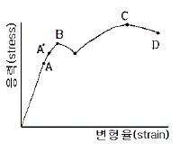
- 비례한도
- 하항복점
- 상항복점
- 극한강도
(정답률: 60%)
4과목: 전기제어공학
61. 10층 건물에 적재 무게가 1000kg이고, 속도가 50m/min인 엘리베이터를 설치할 때 여기에 필요한 전동기의 용량은 약 몇 kW 인가? (단, 전동기의 효율은 80%이다.)
- 6
- 8
- 10
- 12
(정답률: 33%)
62. 추치제어가 아닌 것은?
- 탱크의 레벨제어
- 자동 아날로그 선반제어
- 열처리로의 온도제어
- 보일러의 자동연소제어
(정답률: 27%)
63. 온도를 임피던스로 변환시키는 요소는?
- 측온저항
- 광전지
- 광전다이오드
- 전자석
(정답률: 60%)
64. 그림은 릴레이 접점에 의하여 자기유지회로를 구성한 것이다. 이를 논리게이트 회로로 그릴 때 옳은 것은?
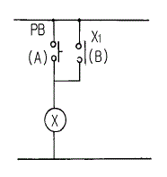
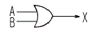
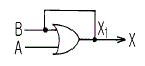
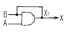
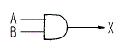
(정답률: 44%)
65. 무인운전을 시행하기 위한 제어에 해당되는 것은?
- 정치제어
- 추종제어
- 비율제어
- 프로그램제어
(정답률: 64%)
66. 그림은 전동기 제어회로의 일부이다. 이 회로의 기능으로 볼 수 없는 것은?
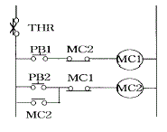
- 자기유지회로
- 인터록회로
- 정ㆍ역 운전회로
- 과부하 정지회로
(정답률: 34%)
67. 100V용 전구 30W, 60W 두 개를 직렬 연결하고 직류 100V 전원에 접속하였을 때 두 전구의 상태로 옳은 것은?
- 30W가 더 밝다.
- 60W가 더 밝다.
- 두 전구가 모두 켜지지 않는다.
- 두 전구의 밝기가 모두 같다.
(정답률: 58%)
68. 정격 600W 전열기에 정격전압의 80%를 인가하면 전력은 몇 W 로 되는가?
- 384
- 486
- 545
- 614
(정답률: 33%)
69. PＩ제어동작은 정상특성 즉, 제어의 정도를 개선하는 지상요소인데 이것을 보상하는 지상보상의 특성으로 옳은 것은?
- 주어진 안정도에 대하여 속도편차상수가 감소한다.
- 시간응답이 비교적 빠르다.
- 이득 여유가 감소하고 공진값이 증가한다.
- 이득 교점 주파수가 낮아지며, 대역폭은 감소한다.
(정답률: 17%)
70. kVA는 무엇의 단위인가?
- 유효전력
- 피상전력
- 효율
- 무효전력
(정답률: 48%)
71. 제어기기에는 검출기, 변환기, 증폭기, 조작기기 등이 있다. 서보전동기(Servo motor)는 어디에 속하는가?
- 증폭기
- 조작기기
- 변환기
- 검출기
(정답률: 52%)
72. 유도전동기에서 슬립이 "0" 이란 의미와 같은 것은?
- 유도전동기가 동기속도로 회전한다.
- 유도전동기가 전부하 운전상태이다.
- 유도전동기가 정지상태이다.
- 유도제동기의 역할을 한다.
(정답률: 54%)
73. 논리식 A+BC 와 등가인 논리식은?
- AB+AC
- (A+B)(A+C)
- (A+B)C
- (A+C)B
(정답률: 40%)
74. 정전용량이 같은 콘덴서 10개가 있다. 이것을 병렬로 접속할 때의 값은 직렬로 접속할 때의 몇 배가 되는가?
- 0.1
- 1
- 10
- 100
(정답률: 44%)
75. 주권선 양쪽에 각각 보호권선을 설치하여 어느 한 권선을 전원에 대하여 반대로 접속하여 회전방향을 바꾸는 전동기는?(오류 신고가 접수된 문제입니다. 반드시 정답과 해설을 확인하시기 바랍니다.)
- 반발기동형전동기
- 분상기동형전동기
- 콘덴서기동형전동기
- 셰이딩코일형전동기
(정답률: 35%)
76. 입력으로 단위계단함수 u(t)를 가했을 때, 출력이 그림과 같은 조절계는?
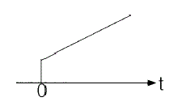
- 2위치 동작
- P 동작
- PＩ동작
- PD 동작
(정답률: 40%)
77. 블럭선도에서 신호의 흐름을 반대로 할 때, ⓐ에 해당하는 것은?
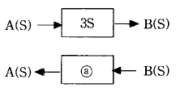
- 3S
- -3S
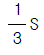
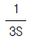
(정답률: 39%)
78. 내부저항이 20kΩ이고, 최대눈금이 200V인 전압계와 내부저항이 15kΩ이고, 최대눈금이 200V인 전압계를 직렬로 접속하여 측정할 때 최대 몇 V 까지 측정할 수 있는가?
- 250
- 300
- 350
- 400
(정답률: 26%)
79. 자동제어계에서 이득이 높아지면?
- 정상오차가 증가한다.
- 과도응답이 진동하거나 불안정하게 된다.
- 응답이 빨라진다.
- 정정시간이 짧아진다.
(정답률: 21%)
80. 고압 전기기기의 절연저항 측정에 관한 사항으로 옳지 않은 것은?
- 절연저항은 무한대의 값을 갖는 것이 가장 이상적이다.
- 메거의 선(L)단자에 기기의 코일단자를 연결한다.
- 메거의 접지(E)단자에 기기 외함을 연결한다.
- 절연저항의 측정치는 10Ω이하가 적당하다.
(정답률: 45%)